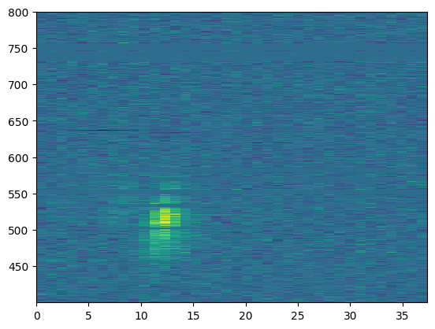
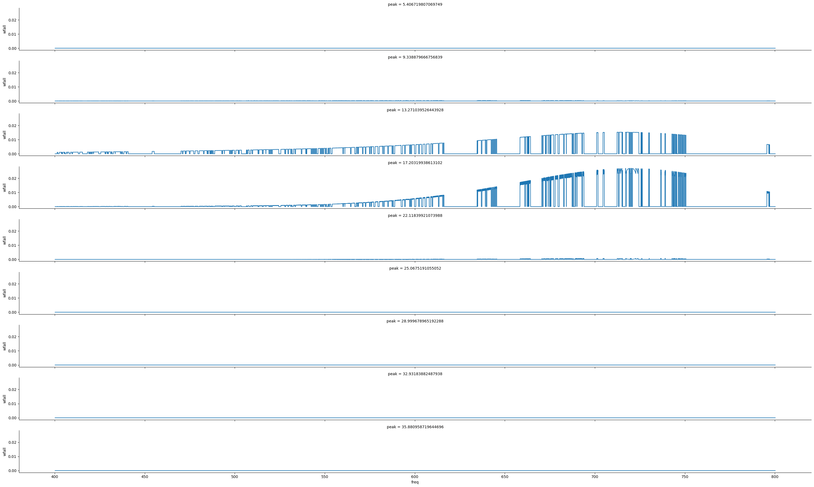
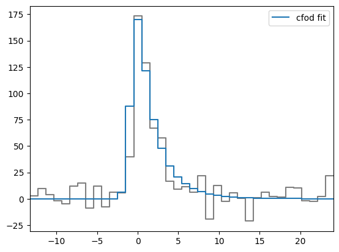
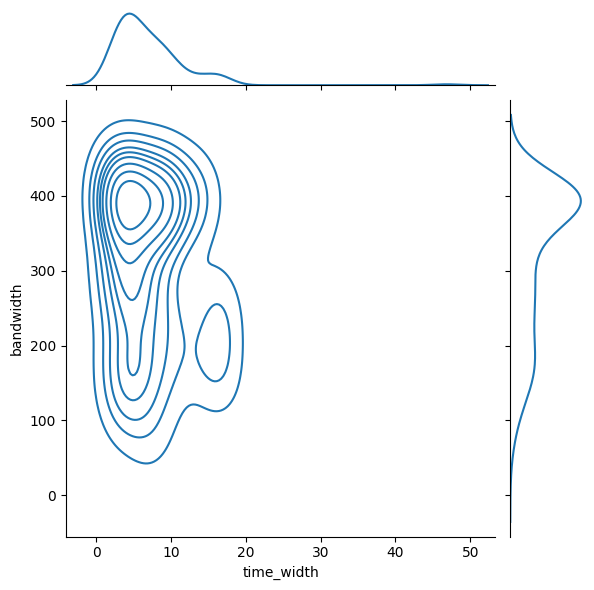
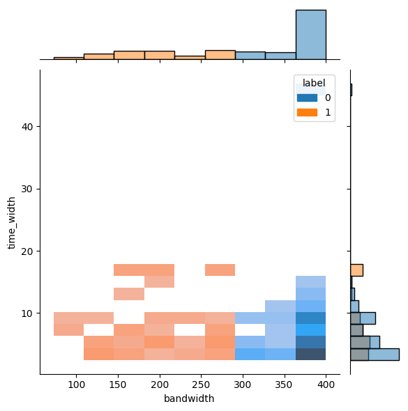

import pandas as pd
import numpy as np
import scipy
Note
📌 Goal: This notebook tries to differentiate between broadband and shortband single peak fast radio burst, as described in (Pleunis et al. 2021).
from sarjana.handlers import ParquetWaterfall
from sarjana.signal import find_peaks
from pathlib import Path
import matplotlib.pyplot as plt
single_file = Path('D://', 'home', 'datasets', 'sarjana', 'raw', 'wfall', 'FRB20190117A_waterfall.h5.parquet')
burst = ParquetWaterfall(single_file).remove_rfi()D:\home\lab\sarjana\sarjana\signal.py:40: RuntimeWarning: Degrees of freedom <= 0 for slice.
channel_variance = np.nanvar(wfall, axis=1)
D:\home\lab\sarjana\sarjana\handlers.py:13: RuntimeWarning: Mean of empty slice
data = np.nanmean(data.reshape((num_chan // fbin_factor, fbin_factor) + data.shape[1:]), axis=1)burst.wfall_dimension('freq', 'time')from copy import deepcopy
def dmdelay(dm,fx,fstart):
return 4148.741601*(1.0/(fstart**2)
-(1.0/(fx**2)))*dm
def dedisperse(data,dm,f,fstart,tsamp,sep=False):
temp = np.zeros(data.shape)
delay = np.round(dmdelay(dm,f,fstart)/tsamp)
for i in range(np.shape(temp)[1]):
temp[:,i] = np.roll(data[:,i],int(delay[i]))
return (temp if sep else np.sum(temp,axis=1))plt.imshow(burst.wfall, aspect="auto", interpolation="none",
extent=burst.extent)<matplotlib.image.AxesImage at 0x202a5e635e0>
from sarjana.signal import find_full_width_nth_maximum
widths, width_heights, lefts, rights = find_full_width_nth_maximum(
burst.ts, peaks,
n=10
)
widths, width_heights, lefts, rights(array([ 3.27627544, 2.71223693, 10.60332632, 3.17391188, 1.00800037,
7.61754665, 2.58608908, 2.71536721, 1.51370134]),
array([ -4.12731844, -10.93771345, -6.92809047, 29.81593574,
-10.64009475, -16.72144703, -3.02464486, -14.01885681,
0.65579072]),
array([ 3.32861646, 7.10463553, 10.15708246, 15.19890055, 21.1 ,
23.25698313, 27.45495652, 32.18182623, 35.38629866]),
array([ 6.6048919 , 9.81687246, 20.76040879, 18.37281243, 22.10800037,
30.87452978, 30.0410456 , 34.89719345, 36.9 ]))np.nanmean(np.transpose(burst.model_wfall)[int(lefts[0]):int(rights[0])], axis=0)array([4.00648365e-11, 4.00648365e-11, 4.00648365e-11, ...,
4.00648365e-11, 4.00648365e-11, 4.00648365e-11])import seaborn as sns
# TODO Select around the peaks OR select around the burst?
# TODO Systematic FWTM
# TODO OR should we just use high_freq and low_freq from CHIME/FRB?
# data = pd.DataFrame.from_dict({"peak": burst.plot_time[peaks[0]], "freq": burst.plot_freq, "wfall": np.transpose(burst.model_wfall)[peaks[0]]})
data = pd.DataFrame()
for peak, left, right in zip(peaks, lefts, rights):
new = pd.DataFrame({"peak": burst.plot_time[peak], "freq": burst.plot_freq, "wfall": np.nanmean(np.transpose(burst.model_wfall)[int(left):int(right)+1], axis=0)})
_,_, leftborder, rightborder = find_full_width_nth_maximum(
new['wfall'], [new['wfall'].to_numpy().argmax()], n=10
)
data = pd.concat([data, new])
data.loc[data['peak'] == burst.plot_time[peak], "left"] = leftborder[0]
data.loc[data['peak'] == burst.plot_time[peak], "right"] = rightborder[0]
g = sns.FacetGrid(data, row='peak', aspect=15, height=2)
g.map(sns.lineplot, 'freq', 'wfall')D:\home\lab\sarjana\sarjana\signal.py:77: PeakPropertyWarning: some peaks have a prominence of 0
return scipy.signal.peak_widths(y, peaks, rel_height=1 - (1 / n))
D:\home\lab\sarjana\sarjana\signal.py:77: PeakPropertyWarning: some peaks have a width of 0
return scipy.signal.peak_widths(y, peaks, rel_height=1 - (1 / n))
D:\home\lab\sarjana\sarjana\signal.py:77: PeakPropertyWarning: some peaks have a prominence of 0
return scipy.signal.peak_widths(y, peaks, rel_height=1 - (1 / n))
D:\home\lab\sarjana\sarjana\signal.py:77: PeakPropertyWarning: some peaks have a width of 0
return scipy.signal.peak_widths(y, peaks, rel_height=1 - (1 / n))
D:\home\lab\sarjana\sarjana\signal.py:77: PeakPropertyWarning: some peaks have a prominence of 0
return scipy.signal.peak_widths(y, peaks, rel_height=1 - (1 / n))
D:\home\lab\sarjana\sarjana\signal.py:77: PeakPropertyWarning: some peaks have a width of 0
return scipy.signal.peak_widths(y, peaks, rel_height=1 - (1 / n))<seaborn.axisgrid.FacetGrid at 0x2021d623490>
from sarjana.plotting import plot_time_flux
from sarjana.signal import is_multipeak
is_multipeak(burst.ts, prominence='stdev')
plot_time_flux(burst.ts, burst.model_ts, burst.plot_time, burst.dt)<AxesSubplot: >
from pathlib import Path
from sarjana.signal import is_multipeak, find_full_width_nth_maximum
catalog_file = Path('D://', 'home', 'datasets', 'sarjana', 'raw', 'cfod', 'chimefrb_profile_norfi.parquet')
catalog = pd.read_parquet(catalog_file)
# Resize time
catalog['plot_time'] = catalog['plot_time'] - (catalog['dt'] / 2)
catalog["multipeak"] = [is_multipeak(x.copy()) for x in catalog["ts"].values]
single_peaks = catalog[catalog["multipeak"] == False]
def time_width(flux, peaks, delta):
widths, width_heights, lefts, rights = find_full_width_nth_maximum(
flux, peaks, n=10
)
return widths[0]*delta
single_peaks['time_width'] = single_peaks.apply(lambda x: time_width(x['ts'].copy(), [x['ts'].argmax()], x['dt']), axis='columns')C:\Users\LENOVO\AppData\Local\Temp\ipykernel_17280\2230365237.py:18: SettingWithCopyWarning:
A value is trying to be set on a copy of a slice from a DataFrame.
Try using .loc[row_indexer,col_indexer] = value instead
See the caveats in the documentation: https://pandas.pydata.org/pandas-docs/stable/user_guide/indexing.html#returning-a-view-versus-a-copy
single_peaks['time_width'] = single_peaks.apply(lambda x: time_width(x['ts'].copy(), [x['ts'].argmax()], x['dt']), axis='columns')def gauss(time: np.ndarray, sigma: float, amplitude: float = 1.0, peak_time: float = 0.0):
return amplitude * np.exp(-((time - peak_time) ** 2) / (2 * sigma**2))
def scattered_gaussian_signal(
time: np.ndarray,
sigma: float,
tau: float,
amplitude: float = 1.0,
peak_time: float = 0.0,
) -> np.ndarray:
_time = time - peak_time
first_term: np.ndarray = -(_time / tau) + (sigma**2) / (2 * (tau**2))
second_term: np.ndarray = (_time / (np.sqrt(2) * sigma)) - (
sigma / (np.sqrt(2) * tau)
)
return amplitude * 0.5 * np.exp(first_term) * (1 + scipy.special.erf(second_term))
from typing import Callable
from sarjana.optimize import fit_time_series
def generate_single_peak_model(data: pd.DataFrame, func: Callable) -> pd.DataFrame:
def try_fit(func, data) -> dict:
try:
return fit_time_series(
func,
data["plot_time"],
data["ts"],
params={
"amplitude": data["ts"].max(),
"peak_time": data["plot_time"][data["ts"].argmax()],
},
)
except RuntimeError:
return fit_time_series(
func,
data["plot_time"],
data["model_ts"],
params={
"amplitude": data["model_ts"].max(),
"peak_time": data["plot_time"][data["model_ts"].argmax()],
},
)
data[func.__name__] = data.apply(
lambda x: try_fit(func, x), axis="columns"
)
return datadf1 = generate_single_peak_model(single_peaks, scattered_gaussian_signal)
data = df1[['eventname', 'dm', 'scattered_gaussian_signal', 'time_width']]
data['sigma'] = data['scattered_gaussian_signal'].apply(lambda x: x.get('sigma', 0)[0])
data['sigma_err'] = data['scattered_gaussian_signal'].apply(lambda x: x.get('sigma', 0)[1])
data['tau'] = data['scattered_gaussian_signal'].apply(lambda x: x.get('tau', 0)[0])
data['tau_err'] = data['scattered_gaussian_signal'].apply(lambda x: x.get('tau', 0)[1])
data['sigma_per_tau'] = data['sigma']/data['tau']d:\home\lab\sarjana\.venv\lib\site-packages\scipy\optimize\_minpack_py.py:881: OptimizeWarning: Covariance of the parameters could not be estimated
warnings.warn('Covariance of the parameters could not be estimated',
D:\home\lab\sarjana\sarjana\optimize.py:27: RuntimeWarning: invalid value encountered in sqrt
_stdevs = np.sqrt(np.diag(_pcov))
C:\Users\LENOVO\AppData\Local\Temp\ipykernel_17280\2956812042.py:44: SettingWithCopyWarning:
A value is trying to be set on a copy of a slice from a DataFrame.
Try using .loc[row_indexer,col_indexer] = value instead
See the caveats in the documentation: https://pandas.pydata.org/pandas-docs/stable/user_guide/indexing.html#returning-a-view-versus-a-copy
data[func.__name__] = data.apply(
C:\Users\LENOVO\AppData\Local\Temp\ipykernel_17280\215846776.py:4: SettingWithCopyWarning:
A value is trying to be set on a copy of a slice from a DataFrame.
Try using .loc[row_indexer,col_indexer] = value instead
See the caveats in the documentation: https://pandas.pydata.org/pandas-docs/stable/user_guide/indexing.html#returning-a-view-versus-a-copy
data['sigma'] = data['scattered_gaussian_signal'].apply(lambda x: x.get('sigma', 0)[0])
C:\Users\LENOVO\AppData\Local\Temp\ipykernel_17280\215846776.py:5: SettingWithCopyWarning:
A value is trying to be set on a copy of a slice from a DataFrame.
Try using .loc[row_indexer,col_indexer] = value instead
See the caveats in the documentation: https://pandas.pydata.org/pandas-docs/stable/user_guide/indexing.html#returning-a-view-versus-a-copy
data['sigma_err'] = data['scattered_gaussian_signal'].apply(lambda x: x.get('sigma', 0)[1])
C:\Users\LENOVO\AppData\Local\Temp\ipykernel_17280\215846776.py:6: SettingWithCopyWarning:
A value is trying to be set on a copy of a slice from a DataFrame.
Try using .loc[row_indexer,col_indexer] = value instead
See the caveats in the documentation: https://pandas.pydata.org/pandas-docs/stable/user_guide/indexing.html#returning-a-view-versus-a-copy
data['tau'] = data['scattered_gaussian_signal'].apply(lambda x: x.get('tau', 0)[0])
C:\Users\LENOVO\AppData\Local\Temp\ipykernel_17280\215846776.py:7: SettingWithCopyWarning:
A value is trying to be set on a copy of a slice from a DataFrame.
Try using .loc[row_indexer,col_indexer] = value instead
See the caveats in the documentation: https://pandas.pydata.org/pandas-docs/stable/user_guide/indexing.html#returning-a-view-versus-a-copy
data['tau_err'] = data['scattered_gaussian_signal'].apply(lambda x: x.get('tau', 0)[1])
C:\Users\LENOVO\AppData\Local\Temp\ipykernel_17280\215846776.py:8: SettingWithCopyWarning:
A value is trying to be set on a copy of a slice from a DataFrame.
Try using .loc[row_indexer,col_indexer] = value instead
See the caveats in the documentation: https://pandas.pydata.org/pandas-docs/stable/user_guide/indexing.html#returning-a-view-versus-a-copy
data['sigma_per_tau'] = data['sigma']/data['tau']import os
chime_catalog = os.environ.get('catalog')
cat = pd.read_csv(chime_catalog)cat.columnsIndex(['tns_name', 'previous_name', 'repeater_name', 'ra', 'ra_err',
'ra_notes', 'dec', 'dec_err', 'dec_notes', 'gl',
...
'weight_fluence_error_m', 'weight', 'weight_error_p', 'weight_error_m',
'weighted_logrhoA', 'weighted_logrhoA_error_p',
'weighted_logrhoA_error_m', 'weighted_logrhoB',
'weighted_logrhoB_error_p', 'weighted_logrhoB_error_m'],
dtype='object', length=107)stats = pd.merge(data, cat[['tns_name','high_freq', 'low_freq', 'peak_freq', 'dm_fitb', 'scat_time']], left_on='eventname', right_on='tns_name').drop(columns='tns_name')
stats['bandwidth'] = stats['high_freq'] - stats['low_freq']import seaborn as sns
sns.jointplot(stats, x='time_width',y='bandwidth', kind='kde')<seaborn.axisgrid.JointGrid at 0x26c71f3d2b0>
from sklearn.cluster import KMeans
# DBSCAN is not helpful because many data are focused on the limit
clusterer = KMeans(n_clusters=2)
clusterer.fit(stats[['bandwidth']])
stats['label'] = clusterer.labels_d:\home\lab\sarjana\.venv\lib\site-packages\sklearn\cluster\_kmeans.py:870: FutureWarning: The default value of `n_init` will change from 10 to 'auto' in 1.4. Set the value of `n_init` explicitly to suppress the warning
warnings.warn(sns.jointplot(stats, x='bandwidth', y='time_width', hue='label', kind='hist')<seaborn.axisgrid.JointGrid at 0x26c7b788550>
References
Pleunis, Ziggy, Deborah C. Good, Victoria M. Kaspi, Ryan Mckinven, Scott M. Ransom, Paul Scholz, Kevin Bandura, et al. 2021. “Fast Radio Burst Morphology in the First CHIME/FRB Catalog.” The Astrophysical Journal 923 (1): 1. https://doi.org/10.3847/1538-4357/ac33ac.